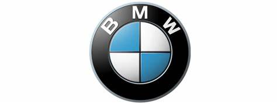

Tentang Kami

| Sejarah perusahaan Kantor pusat BMW di München, Jerman BMW F 650 GS Dakar (2004) BMW mengawali bisnisnya setelah restrukturisasi dari perusahaan pembuat mesin pesawat terbang Rapp Motorenwerke tahun 1917. Akhir dari Perang Dunia I tahun 1918, BMW dipaksa untuk berhenti memproduksi mesin pesawat terbang karena adanya Perjanjian Versailles.[2] Perusahaan ini beralih untuk memproduksi sepeda motor tahun 1923 setelah perjanjian itu mulai dilonggarkan,[3] dan mulai memproduksi mobil tahun 1928/29.[4][5][6] Tahun 1992, BMW mengakuisisi perusahaan studio desain industri di California DesignworksUSA, dan mengakuisisi penuh tahun 1995. Tahun 1994, BMW membeli perusahaan otomotif Inggris Grup Rover[7] (di mana pada saat itu ada merek Rover, Land Rover dan MG dan juga hak atas merek yang sudah tidak lagi diproduksi yaitu Austin dan Morris) dan memilikinya selama 6 tahun. Tahun 2000, Rover mengalami kerugian besar dan BMW pun menjualnya. Merek MG dan Rover dijual ke Phoenix Consortium untuk membentuk MG Rover, sedangkan Land Rover diambil alih Ford. BMW akhirnya mendirikan merek sendiri yang ia namai MINI, yang diluncurkan tahun 2001. Produksi Pada tahun 2006, Grup BMW (termasuk Mini dan Rolls-Royce) memproduksi 1.366.838 unit mobil yang diproduksi di 5 negara.[8] Tahun 2010, meningkat menjadi 1.481.253 unit mobil dan 112.271 unit motor (dengan merek BMW dan Husqvarna brands).[9] Mobil-mobil yang diproduksi oleh BMW 56% merupakan mobil bensin dan 44 % sisanya mobil diesel. Dari mobil-mobil bensin itu, 27% memakai mesin 4 silinder dan 9% memakai mesin 8 silinder.[10] BMW juga mempunyai pabrik perakitan komponen di Thailand, Rusia, Mesir, Indonesia, Malaysia, dan Chennai, India untuk seri 3, 5, 7, dan X3.[ |